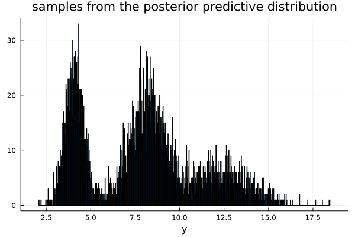
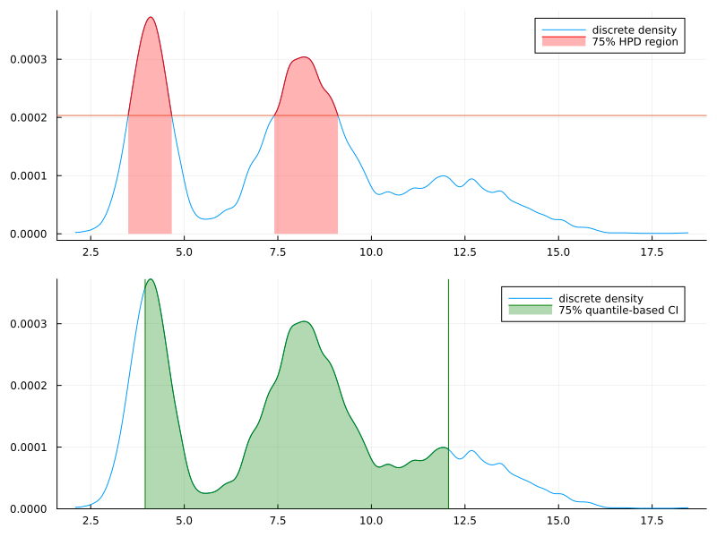

Exercise 4.7 Solution Example - Hoff, A First Course in Bayesian Statistical Methods
標準ベイズ統計学 演習問題 4.7 解答例
a)
answer
Random.seed!(1234)
dist_inv_σ² = Gamma(10, 1/2.5)
dist_θ = σ² -> Normal(4.1, σ²/20)
π = [0.31, 0.46, 0.23]
t = Multinomial(1, π)
dist_list = (θ, σ) -> [Normal(θ, σ), Normal(2θ, 2σ), Normal(3θ, 3σ)]
y_mc = Array{Float64, 1}()
for i in 1:5000
inv_σ² = rand(dist_inv_σ²)
σ² = 1 / inv_σ²
σ = sqrt(σ²)
θ = rand(dist_θ(σ²))
w = rand(t) .== 1
dist_pred = dist_list(θ, σ)[w][1]
y = rand(dist_pred)
append!(y_mc, y)
end

b)
answer
# 75% quantile
prob = 0.75
lower = (1 - prob) / 2
upper = 1 - lower
ci_quantile = quantile(y_mc, [lower, upper])
2-element Vector{Float64}:
3.954945418674755
12.059043291517227
c)
answer
# i
sorted_y_mc = sort(y_mc)
y_density = kerneldensity(y_mc)
y_density_normalized = y_density ./ sum(y_density)
# ii
y_density_sorted = sort(y_density_normalized, rev=true)
# iii
y_density_sorted_cumsum = cumsum(y_density_sorted)
threshhold_cumsum_idx = findfirst(x -> x > prob, y_density_sorted_cumsum)
y_density_sorted_cumsum[threshhold_cumsum_idx]
threshhold_prob = y_density_sorted[threshhold_cumsum_idx]

d)
answer
The model is as follows:
\begin{align*} \boldsymbol{w} = \begin{pmatrix} w_1 \\ w_2 \\ w_3 \end{pmatrix} &\sim \text{Multinomial}(0.31, 0.46, 0.23) \\ \sigma^2 &\sim \text{InverseGamma}(10, 2.5) \\ \theta | \sigma^2 &\sim \text{Normal}(4.1, \sigma^2/20) \\ y | \theta, \sigma^2, \boldsymbol{w} &\sim w_1 \mathcal{N}(\theta, \sigma^2) + w_2 \mathcal{N}(2 \theta, 2 \sigma^2) + w_3 \mathcal{N}(3 \theta, 3 \sigma^2) \end{align*}Then the marginal distribution of \(Y\) is
\begin{align*} p(y) &= \int \int \int p(y, \theta, \sigma^2, \boldsymbol{w}) d\theta d\sigma^2 d\boldsymbol{w} \\ &= \int \int \int p(y | \theta, \sigma^2, \boldsymbol{w}) p(\theta | \sigma^2) p(\sigma^2) p(\boldsymbol{w}) d\theta d\sigma^2 d\boldsymbol{w}. \\ \end{align*}Therefore, \(Y\) can be sampled from the following procedure:
- Sample \(\sigma^{2(s)} \sim p(\sigma^2) \).
- Sample \(\theta^{(s)} \sim p(\theta | \sigma^{2(s)}) \).
- Sample \(\boldsymbol{w}^{(s)} \sim p(\boldsymbol{w})\).
- Sample \(y^{(s)} \sim p(y | \theta^{(s)}, \sigma^{2(s)}, \boldsymbol{w}^{(s)})\).
Then, the empirical distribution of \(\{y^{(1)}, \dots, y^{(s)}\} \to p(y)\) as \(s \to \infty\).